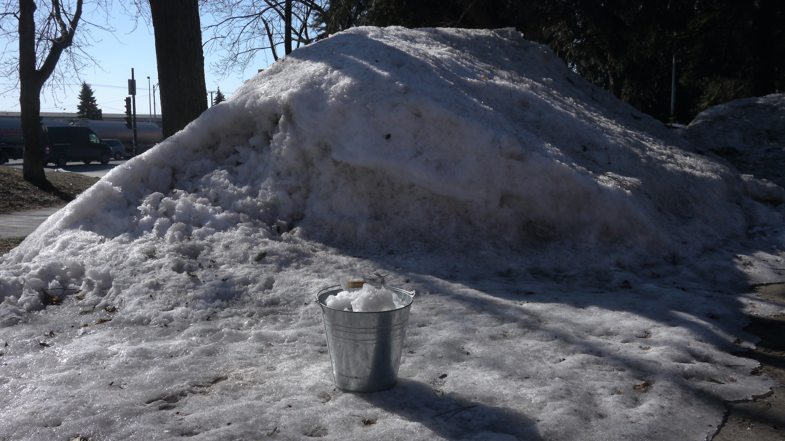

thin air, GHAM & DAFE, Montréal, 2021.
FR //
Deux systèmes biotechnologiques, deux entités poreuses aux contours instables. D’un côté de la pièce, 25L de neige s’évaporent lentement dans l’atmosphère. Les particules d’eau contenues dans l’air ambient se condensent sur un évaporateur de réfrigérateur. De l’autre côté de la pièce, un système de son interfère avec un lombricomposteur. Un microphone piézoélectrique traduit les sons crépitants de l’évaporateur en signaux électriques acheminés vers un mixeur circuit-bent, un amplificateur et une paire de haut-parleurs. La carte électronique du mixeur est directement connectée au compost. La conductivité variable des matières organiques altère les sons émis dans la pièce.
ENG //
Two biotechnological systems, two seemingly autonomous entities whose boundaries are yet fuzzy. On one side of the room, 25L of melted snow are slowly boiled, dispersed in the atmosphere. Water particles contained in the ambient air condenses on the evaporator plate of a refrigerator, then melts and drips at irregular intervals on a clump of moss. On the other side of the room, a sound system overlaps with a worm compost bin. Piezoelectric microphones transduce the crackling sounds of the evaporator plate into low electrical signals sent to a circuit-bent mixer, an amplifier and a pair of speakers. The electronic board of the mixer and the compost bin are wired together. The variable conductivity of the organic material alter directly the sounds emitted in the room.


